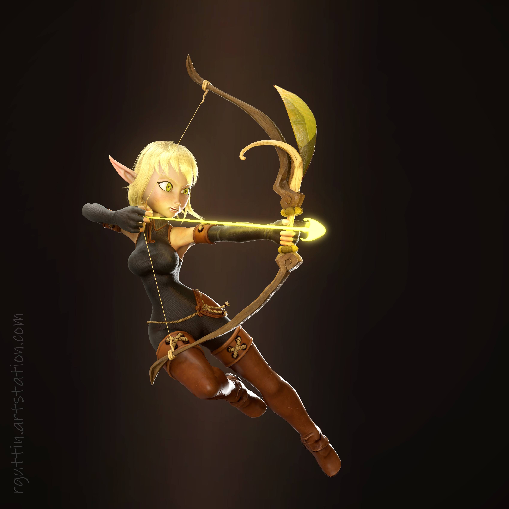

|  | BIOGRAFIA |
|---|---|
|
Evangeline é uma jovem aventureira, assumindo o papel de maga e estrategista do grupo. Inteligente, perspicaz e de espírito livre, ela se destaca por seu conhecimento profundo sobre magias e criaturas místicas. Evangeline é dedicada a proteger aqueles que ama e enfrenta desafios com criatividade e astúcia. Apesar de sua natureza um tanto reservada, ela demonstra coragem e confiança, crescendo constantemente em sua jornada pelo mundo mágico e perigoso. | |
| ARMAS | |
|
Arco de Precisão: Seu arco é altamente confiável e preciso, permitindo disparos rápidos e letais. É capaz de atacar inimigos à distância com grande eficácia, garantindo controle do campo de batalha. Destreza e Reflexos: Mesmo sem magia própria, Evangelyne possui reflexos ágeis e mira excepcional, tornando-a uma arqueira mortal e confiável. | |
| Habilidades | |
|
Tiros Precisos: Acerta inimigos a longas distâncias com grande precisão, sendo capaz de neutralizar ameaças rapidamente. Movimentação Estratégica: Se posiciona de forma inteligente no campo de batalha, esquivando-se de ataques e mantendo aliados protegidos. Suporte e Controle: Utiliza disparos estratégicos para controlar o combate, proteger o grupo e criar oportunidades para aliados atacarem. |